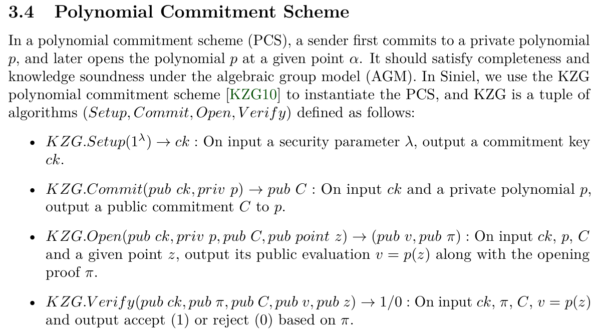
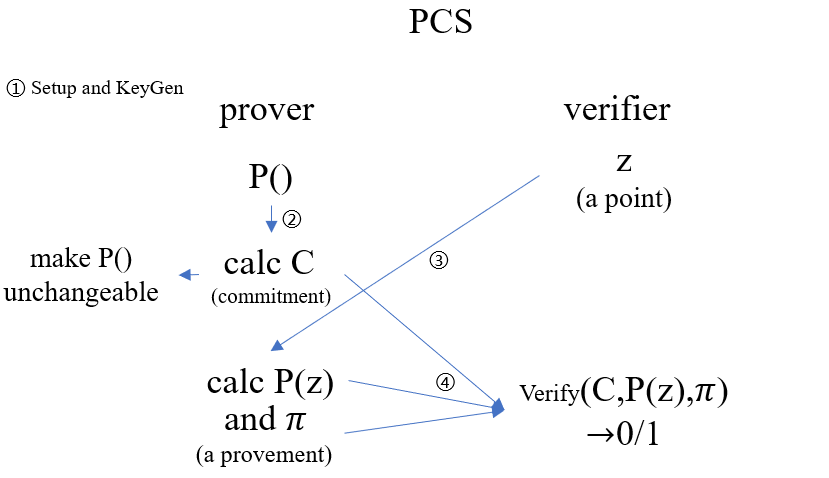
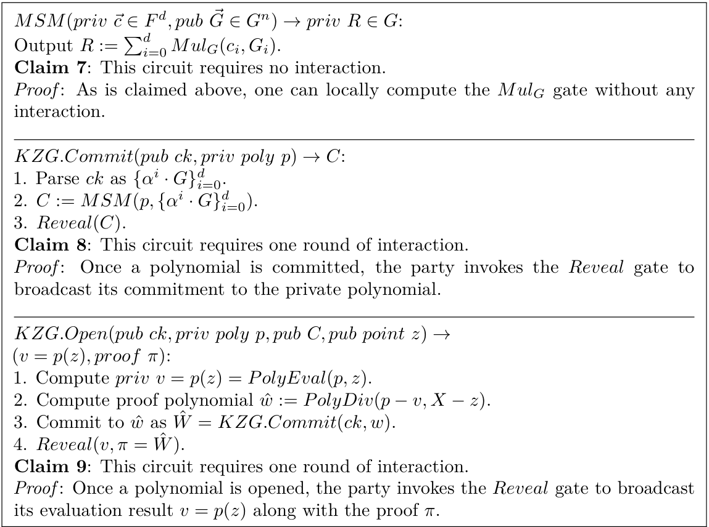

PCS简要介绍
之前听师兄讲PCS（多项式承诺方案），听不懂一点，甚至有一次差点睡着（bushi
今天看Siniel，又遇到PCS了，故而通俗理解记录一下，也没时间看相关论文了~浅学一下，够用即可~~

Motivation：证明者有一个多项式 $p()$，验证者指定一个数 $z$ 来验证，通过承诺确保原多项式不会改变

这里，我们介绍 KZG。更具体的：
KZG 方案是基于双线性对（bilinear pairing）和加法同态加密（homomorphic encryption）的密码学技术。它允许一个发送方承诺（commit）一个多项式，并稍后提供证明（proof），以便验证者确认多项式在某个点的值是否正确。
前置知识：双线性映射
- 设 $G_1,G_2$ 是两个循环群，阶为素数 $p$
- 设 $e:G_1\times G_2\rightarrow G_T$，满足 $e(g^a,h^b)=e(g,h)^{ab}$ 对所有 $a,b\in\mathbb{Z}_p$ 成立，其中 $g,h$ 是群 $G_1$ 和 $G_2$ 的生成元
KGC的四个步骤：（对应图二）
- Setup（设置）： 生成公钥参数。
- Commit（承诺）： 证明者使用私有多项式生成并公开该多项式的承诺。
- Open（打开）： 验证者指定在某个点，而后要求证明者公开该多项式的值并提供一个证明。
- Verify（验证）： 验证者检查提交的值和证明是否有效。
具体流程
2.1 设定（Setup）
由可信第三方（或 MPC ）选取一个私有值 $s$，并计算：${ g, g^s, g^{s^2}, \dots, g^{s^d} }$ 作为公共参数；这些值是椭圆曲线群上的元素并公开发布。
2.2 承诺（Commit）
证明者需验证多项式 $p(x) = a_0 + a_1 x + a_2 x^2 + \dots + a_d x^d$
计算并公开承诺 $C_p = g^{p(s)} = g^{a_0 + a_1 s + a_2 s^2 + \dots + a_d s^d}$
2.3 证明（Open）
验证者想知道证明者的多项式在 $x = \alpha$ 处的值 $y = p(\alpha)$
证明者计算商多项式：$q(x) = \frac{p(x) - p(\alpha)}{x - \alpha}$；因为 $p(x) - p(\alpha)$ 可被 $x - \alpha$ 整除，所以 $q(x)$ 是一个比 $p(x)$ 低 1 阶的多项式。
计算承诺 $C_q$：$C_q = g^{q(s)}$；并将其作为证明 $\pi = C_q$ 发送给验证者。
2.4 验证（Verify）
验证者通过以下等式检查证明是否有效：$e(C_p / g^y, g) = e(\pi, g^{\alpha})$
即：$e(g^{p(s) - y}, g) = e(g^{q(s)}, g^{\alpha})$
若等式成立，则说明证明者提供的 $y = p(\alpha)$ 是正确的。
示例
①设公共参数为：$g, g^s, g^{s^2}, g^{s^3}, \dots$
②证明者私有多项式：$p(x) = 3x^2 + 2x + 5$
计算承诺并将其公开：$C_p = g^{5 + 2s + 3s^2}$
③验证者指定一个点：$z=2$
证明者计算:$p(2) = 3(2)^2 + 2(2) + 5 = 17$
证明者计算商多项式:$q(x) = \frac{(3x^2 + 2x + 5) - 17}{x - 2} = 3x + 8$
证明者计算证明：$\pi = g^{q(s)} = g^{3s + 8}$
④验证者执行验证：$e(C_p / g^{17}, g) = e(g^{3s + 8}, g^2)$
如果等式成立，则证明 $ p(2) = 17 $ 是正确的。
进一步的，关于验证阶段
验证者需要验证 $e(C_p / g^{17}, g) = e(g^{3s + 8}, g^2)$ 是否成立
故只需 $3s^2 + 2s - 12=6s + 16$ 成立，则验证通过
此时 $s=\frac{2 \pm \sqrt{88}}{3}$ （此过程为逆向过程）
即最一开始的公开参数 $s=\frac{2 \pm \sqrt{88}}{3}$ 时，则 $e(C_p / g^{17}, g) = e(g^{3s + 8}, g^2)$ 成立，证明通过
后记：补充说明
和上面的算法相呼应，在论文的后半部分找到的具体算法，本质相同

.gif)
.gif)
.gif)
.gif)
.gif)
.gif)
.gif)
.gif)
.gif)
.gif)
.gif)